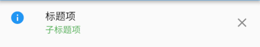

这一章中说明所有剩余的常用多元素布局，包括Flow、Wrap、ListView等。
Flow布局
Flow流布局可以认为是一种自定义布局方式，它可以根据不同效果来进行布局展示，只不过更多情况下是用来实现流式布局效果。
Flow是一种很高效的布局方式，主要是因为通过转换矩阵对子控件进行调整，而且默认配置下，调整布局时，只是进行重绘，并没有实际调整其位置。
布局规则
Flow布局必须要指定一个FlowDelegate，所有的布局效果都是通过FlowDelegate中设置的。下面分别说明下FlowDelegate 的各个方法，分别在Flow布局中起到什么作用。
Size getSize(BoxConstraints constraints)设置控件大小，也就是子控件可用的布局大小。默认使用约束中的最大值。BoxConstraints getConstraintsForChild(int i, BoxConstraints constraints)设置子控件约束，i表示子控件下标；constraints 为 父控件透传的约束。默认使用该约束信息。注意，如果使用其它约束内容，需要重写shouldRelayout方法。bool shouldRelayout(covariant FlowDelegate oldDelegate)设置什么情况下需要调整子控件的位置，默认情况下永远也不需要调整，这也是优化的一个原因。void paintChildren(FlowPaintingContext context)对子控件进行绘制，注意这个方法是抽象的，必须要重写。这个方法里可以通过context.paintChild来进行绘制每个子控件。bool shouldRepaint(covariant FlowDelegate oldDelegate)需要重绘时，该值设置为true，注意该值设置为false也有可能触发绘制流程，比如触发重布局操作等。这个方法也是抽象的，必需重写。
上面FlowDelegate的所有方法共同决定了Flow的布局效果。可以看下下面的使用示例。
布局示例
1 | class MyFlowPage extends StatefulWidget { |
界面效果如下：
这个示例也是Flow流布局最常用的效果。
Wrap布局
Wrap可以认为也是类似于Flex的效果，与Row、Column非常相似。只不过Wrap能够支持多行多列，当主轴上的空间不足时，自动向交叉轴方向上去扩展。
属性说明
- direction 主轴方向，默认为水平方向
- alignment 主轴方向的对齐方式，默认为start起始位置，枚举类型，与Flex的对齐方式一样。
- spacing 主轴方向上子控件之间的间距
- runAlignment 交叉轴方向上每一行（或一列）的对齐方式。有点绕口，不过这个不是交叉轴方向上的对齐方式。
- runSpacing 交叉轴方向上一行（或一列）的间距
- crossAxisAlignment 交叉轴方向上子控件的对齐方式
- verticalDirection、textDirection 与Flex参数一致，分别表示垂直方向start、end设置；文本对齐方式
布局规则
流式布局效果，先在主轴上进行填充，主轴上不可放置则在交叉轴方向上另起一行（或一列），重新在主轴方向上填充。
具体效果参见Flex、Flow，不再详细说明。
布局示例
如果要达到之前Flow示例效果，可以采用如下的方式：
1 | child: Wrap( |
界面效果如下：

ListView布局
ListView布局可以说是使用最多的一批布局效果，所有的列表展示都可以通过ListView进行布局。相比Flex方式（Row、Column），在主轴方向上不限于父控件约束，也就是说可以在主轴方向上设置了ScrollView，可以滑动进行展示。
ListView创建方式
ListView有两种常用的创建方式，第一种是直接将所有子控件一一列出，赋值给children，使用常用构造方法：
1 | ListView({ |
另一种方式是通过Builder创建，子控件通过WidgetBuilder创建，使用Builder构建方法：
1 | ListView.builder({ |
这两种的区别是，第一种更简单直观一些，适用于固定的列表项，而第二种更灵活一些，适用于未知的列表项。
需要注意的是两种的核心处理是一致的，不像有些文章说的，ListView构造方法需要一次性渲染所有的控件，而Builder只有在展示时才会渲染。事实上两个都是展示时才会渲染的，这样可以尽量避免内存溢出的情况。
部分字段说明
由于ListView字段较多，下面只说明了部分字段：
- scrollDirection 滚动方向，也就是主轴方向
- reverse 滚动方向是否为阅读方向，从Scroll集成的字段
- controller 滚动控制，可以设置滚动位置，滚动效果等
- cacheExtent 视口在可见区域之前和之后有一个区域，用于缓存用户滚动时即将可见的项目
- shrinkWrap 常用于内容大小不确定情况，如果为false，则滚动视图将扩展到允许的最大大小。如果是无界约束，则 shrinkWrap 必须为 true.默认设置为false.
实际上ListView中各字段基本都与ScrollView一致。
ListTile
ListTile是一个固定格式的一行内容，常用来在ListView中进行每一项的展示使用。
有如下内容：
- leading 最左侧的部分，Widget类型，一般设置图标。
- title 标题项，Widget类型，一般设置文本。
- subtitle 子标题，与title类型相同。
- trailing 最右侧的部分，Widget类型
- onTap 点击事件
- onLongPress 长按事件
示例如下：
1 | ListTile( |
結果：
使用示例
1 | return Scaffold( |
布局效果：
GridView布局
GridView 是网格形状布局，与ListView一样，继承自 BoxScrollView，所有很多特性都是类似的。
创建方式
count方式
采用GridView.count来创建GridView，这种方式指定了网格形状在交叉轴方向（也就是竖轴方向）上分配几个控件。具体个数由crossAxisCount来指定。示例如下：
1 | GridView.count(crossAxisCount: 2, |
结果：

extent方式
采用GridView.extent来创建GridView，这种方式指定了交叉轴方向上每个控件的最大尺寸，由此给出一个合适的适配效果。通过maxCrossAxisExtent这个字段来设置。
具体示例不再说明。
其它方式
最主要的就是上面两种，但是还有一些其它创建方式，比如原生构造方式、builder方式、custom方式，基本都是通过网格布局代理以及子控件代理方式实现，没有太大的区别。